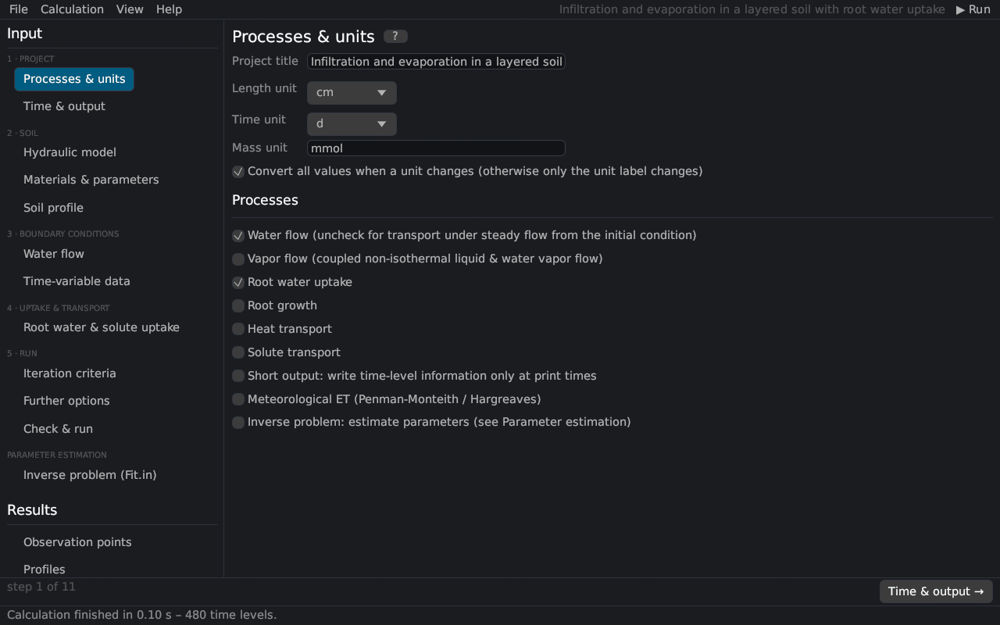

Input (pre-processing)
Processes & units
The first page of a project (the Main Processes and Units dialogs of HYDRUS-1D) sets the title, the units and the processes to simulate. Pages of processes that are switched off are hidden in the navigation.


Project and units
| Input | Description |
|---|---|
| Project title | Name of the project, written to the HYDRUS-1D files. |
| Length unit | mm, cm or m – the unit of heads, depths and lengths. |
| Time unit | seconds, minutes, hours, days or years. |
| Mass unit | label of the concentrations [M/L³]; masses are not converted. |
| Convert all values when a unit changes | rescales every input when the length or time unit changes (units); off: only the label changes. |
Processes
| Process | Description |
|---|---|
| Water flow | Variably saturated water flow (Richards equation). Off: the water contents and fluxes of the initial condition stay constant, e.g. for heat or solute transport in a steady flow field. |
| Vapor flow | Coupled liquid water, water vapor and heat flow Saito et al. (2006) (vapor flow); requires heat transport. |
| Root water uptake | Sink term of root water uptake; enables the page Root water & solute uptake and the root distribution in the soil profile. |
| Root growth | Time-variable rooting depth (root growth). |
| Heat transport | Heat transport by conduction and convection. |
| Solute transport | Solute transport with the number of solutes (1–11). |
| Short output | Writes the time-level tables only at the print times (lShort). |
| Meteorological ET | Potential evapotranspiration from meteorological data with Penman–Monteith or Hargreaves, or the surface energy balance; enables the page Meteorological data. |
| Inverse problem | Parameter estimation from measured data; settings on the page Inverse problem (Fit.in). |
With vapor flow the results depend slightly on the length unit, as in HYDRUS (vapor flow).
Related topics
Time & output · Workflow · Units
Literature cited in this topic
- Saito, H., J. Šimůnek, and B. P. Mohanty (2006). Numerical analysis of coupled water, vapor, and heat transport in the vadose zone. Vadose Zone Journal 5(2): 784–800. doi:10.2136/vzj2006.0007
All sources: References.